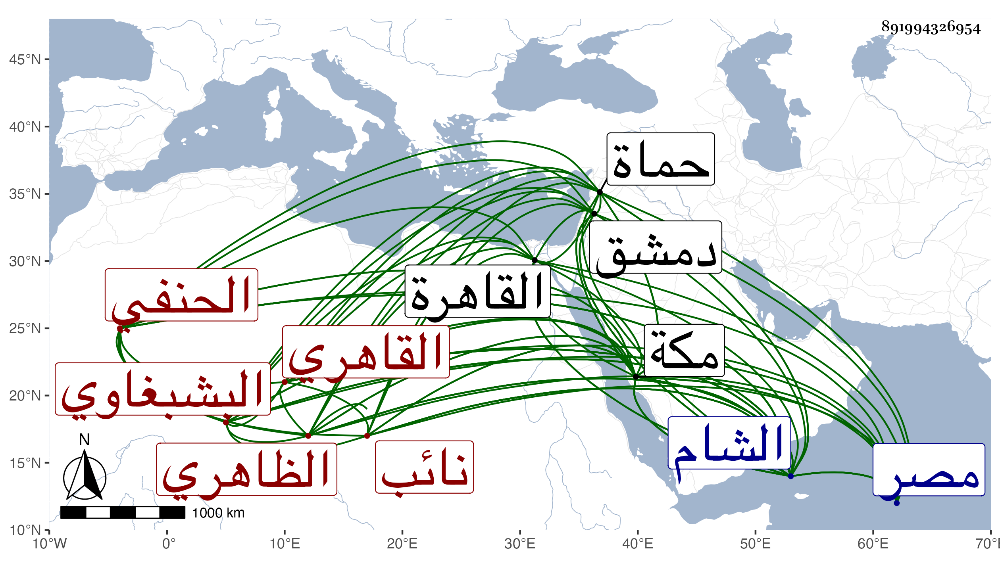

0902Sakhawi.DawLamic.ITO20230111-ara1.EIS1600.891994326954
Biography ID: 891994326954
1178
يوسف بن تغرى بردى الجمال أبو المحاسن بن الأتابكي بالديار المصرية ثم نائب الشام البشبغاوي الظاهري القاهري الحنفي الماضي أبوه . ولد في شوال تحقيقا سنة ثلاث عشرة وثمانمائة تقريبا بدار منجك اليوسفي جوار المدرسة الحسنية ومات أبوه بدمشق على نيابتها وهو صغير فنشأ في حجر أخته عند زوجها الناصري بن العديم الحنفي ثم عند الجلال البلقيني لكونه كان خلفه عليها وحفظ القرآن ثم في كبره فيما زعم مختصر القدوري وألفية النحو وإيساغوجي واشتغل يسيرا وقال أنه قرأ في الفقه على الشمس والعلاء الروميين وفي الصرف على ثانيهما وكذا اشتغل في الفقه على العيني وأبي البقاء بن الضياء المكي والشمني ولازمه أكثر وعليه اشتغل في شرح الألفية لابن عقيل والكافياجي وعليه حضر في الكشاف والزين قاسم واختص به كثيرا وتدرب به وقرأ في العروض على النواجي والمقامات الحريرية على القوام الحنفي وعليه اشتغل في النحو أيضا بل أخذ عنه قطعة جيدة من علم الهيئة وقرأ أقرابادين في الطب على سلام الله وفي البديع وبعض الأدبيات على الشهاب بن عربشاه وكتب عن شيخنا من شعره وحضر دروسه وانتفع فيما زعم بمجالسته وكذا كتب بمكة عن قاضيها أبي السعادات ابن ظهيرة من شعره وشعر غيره وعن البدر بن العليف وأبي الخير بن عبد القوي وغيرهم من شعراء القاهرة ، وتدرب كما ذكر في الفن بالمقريزي والعيني وسمع عليهما الحديث ، وكذا بالقلعة عند نائبها تغرى برمش الفقيه علي ابن الطحان وابن بردس وابن ناظر الصاحبة ، وأجاز له الزين الزركشي وابن الفرات وآخرون . وحج غير مرة أولها في سنة ست وعشرين واعتنى بكتابة الحوادث من سنة أربعين وزعم أنه أوقف شيخه المقريزي على شيء من تعليقه فيها فقال دنا الأجل إشارة إلى وجود قائم بأعباء ذلك بعده وأنه كان يرجع إلى قوله فيما يذكره له من الصواب بحيث يصلح ما كان كتبه أولا في تصانيفه ، بل سمعته يرجح نفسه على من تقدمه من المؤرخين من ثلثمائة سنة بالنسبة لاختصاصه دونهم بمعرفة الترك وأحوالهم ولغاتهم ورأيته إذ أرخ وفاة العيني قال في ترجمته أن البدر البغدادي الحنبلي قال له وهما في الجنازة : خلا الجواشارة إلى أنه تفرد وما رأيته ارتضى وصفه له بذلك من حينئذ فقط فإنه قال إنه رجع من الجنازة فأرسل له ما يدل على أن العيني كان يستفيد منه بل سمعته يصف نفسه بالبراعة في فنون الفروسية كلعب الرمح ورمي النشاب وسوق البرجاس ولعب الكرة والمحمل ونحو ذلك ، وبالجملة فقد كان حسن العشرة تام العقل إلا في دعواه فهو حمق والسكون لطيف المذاكرة حافظا لأشياء من النظم ونحوه بارعا حسبما كنت أتوهمه في أحوال الترك ومناصبهم وغالب أحوالهم منفردا بذلك لا عهد له بمن عداهم ولذلك تكثر فيه أوهامه وتختلط ألفاظه وأقلامه مع سلوك أغراضه وتحاشيه عن مجاهرة من أدبر عنه بإعراضه وما عسى أن يصل إليه تركي ، وقد تقدم عند الجمالي ناظر الخاص بسبب ما كان يطريه به في الحوادث وتأثل منه دنيا وصار بعده إلى جانبك الجداوي فزادف وجاهته واشتهرت عند أكثر الأتراك ومن يلوذ بهم من المباشرين وشبههم في التاريخ براعته وبسفارته عند جانبك خلص البقاعي من ترسيمه حين ادعى عليه عنده بما في جهته لجامع الفكاهين لكون البقاعي ممن كان يكثر التردد لبابه ويسامره بلفظه وخطابه وربما حمله على إثبات ما لا يليق في الوقائع والحوادث مما يكون موافقا لغرضه خصوصا في تراجم الناس وأوصافهم لما عنده من الضغن والحقد كما وقع له في أبي العباس الواعظ وابن أبي السعود ، وكان إذا سافر يستخلف في كتابة الحوادث ونحوها التقي القلقشندي ، وقد صنف المنهل الصافي والمستوفي بعد الوافي في ست مجلدات تراجم خاصة على حروف المعجم من أول دولة الترك والدليل الشافي على المنهل الصافي ومورد اللطافة فيمن ولي السلطنة والخلافة والبشارة في تكملة الإشارة للذهبي وحلية الصفات في الأسماء والصناعات مشتمل على مقاطيع وتاريخ وأدبيات رتبه على حروف المعجم وغير ذلك وفيها الوهم الكثير والخلط الغزير مما يعرفه النقاد والكثير من ذلك ظاهر لكل ومنه السقط في الأنساب كتسمية الحجار أحمد بن نعمة مع كون نعمة جده الأعلى وكحذفه ما يتكرر من الأسماء في النسب أو الزيادة فيه بأن يكون في النسب ثلاثة محمدين فيجعلهم أربعة أو أربعة فيجعلهم خمسة . والقلب كأن يكون المترجم طالبا لواجد فيجعله شيخا له . والتصحيف والتحريف كالغرافي بالفاء والغين المعجمة يجعله مرة بالقاف ومرة بالعين والقاف مخففا وكالحسامية بالخشابية وتسعين بسبعين وعكسه وابن سكر حيث ضبطه بالشين المعجمة وفريد الدين بمؤيد الدين . والتغيير كسليمان من سلمان وعكسه وعبد الله من أبي عبد الله وسعد من سعد الله ونبا حيث جعله عليا وعبد الغفار صاحب الحاوي حيث جعله عبد الوهاب وابن أبي جمرة الولي الشهير حيث جعله محمدا وصلاح الدين خليل بن السابق أحد رؤساء الشام سماه محمدا وعبد الرحمن البوتيجي الشهير جعله أبا بكر وأحمد بن علي القلقشندي صاحب صبح الأعشى سمى والده عبد الله . والتكرير فيكتب الرجل في موضعين مرة في إبرهيم ومرة في أحمد وربما تنبه لذلك فيجوز كونه أخا ثانيا . وإشهار المترجم بما لا يكون به مشهورا حيث يروم التشبه بابن خلكان أو الصفدي فيما يكتبانه بهامش أول الترجمة لسهولة الكشف عنه ككتابته مقابل ترجمة أحمد بن محمد بن عبد المعطي جد قاضي المالكية بمكة المحيوي عبد القادر مانصه ابن طراد النحوي الحجازي . أو وصفه بما لم يتصف به كالصلاح بن أبي عمر حيث وصفه بالحافظ والجمال الحنبلي بالعلامة وناصر الدين بن المخلطة بقوله أنه لم يخلف بعده مثله ضخامة وعلما ومعرفة ودينا وعفة . وتعبيره بما لا يطابق الوافع كقوله في البرهان بن خضر تفقه بابن حجر . أو شرحه لبعض الألقاب بما لا أصل له حيث قال في ابن حجر نسبة إلى آل حجر يسكنون الجنوب الآخر على بلاد الحرية ... وأرضهم قابس . أو لحنه الواضح وما أشبهه كأزوجه في زوجه والحياة في الحيا والمجاز في المزاج وأجعزه في أزعجه واليكابة في الكآبة والحطيط في الحضيض ومنتضمه في منتظمه وظنين في ضنين . بل ويذكر في الحوادث ما لم يتفق كأنه كان يكتب بمجرد السماع كقوله في الشهاب بن عربشاه مع زعمه أنه من شيوخه أنه استقر في قضاء الحنفية بحماة في صفر سنة أربع وخمسين عوضا عن ابن الصواف وأن ابن الصواف قدم في العشر الثاني من الشهر الذي يليه فأعيد في أواخر جمادى الآخرة ، وهذا لم يتفق كما أخبرني به الجمالي بن السابق الحموي وكفى به عمدة سيما في أخبار بلده وكقوله عن جانم أنه لما أمر برجوعه من الخانقاه إلى الشام توجه كاتب السر ابن الشحنة لتحليفه في يوم الثلاثاء ثامن عشرى رمضان سنة خمس وستين فإن هذا كما قال ابن الشحنة المشار إليه لم يقع وكقوله لابن صلاح الدين بن الكويز استقر في وكالة بيت المال عوضا عن الشرف الأنصاري في رجب سنة ثلاث وستين وفي ظني أن المستقر حينئذ فيها إنما هو الزين بن مزهر ، ويذكر في الوفيات تعيين مجال دفن المترجمين فيغلط كقوله في نصر الله الروياني أنه دفن بزاويته ، إلى غير ذلك من تراجمه التي يقلد فيها بعض المتعصبين كما تقدم ، أو يسلك فيها الهوى كترجمته لمنصور بن صفي وجانبك الجداوي بل سمعت غير واحد من أعيان الترك ونقادهم العارفين بالحوادث والذوات يصفونه بمزيد الخلل في ذلك وحينئذ فما بقي ركون لشيء مما يبديه وعلى كل حال فقد كان لهم به جمال . وقد اجتمعت به مرارا وكان يبالغ في إجلالي إذا قدمت عليه ويخصني بتكرمة للجلوس والتمس مني اختصار الخطط للمقريزي وكتبت عنه ما قال إنه من نظمه فيمن اسمها فائدة وهو :
| تجارة الصب غدت | في حب خود كاسده |
| ورأس مالي هبة | لفرحتي بفائده |
وابتنى له تربة هائلة بالقرب من تربة الأشرف إينال ووقف كتبه وتصانيفه بها ، وتعلل قبل موته ينحو سنة بالقولنج واشتد به الأمر من أواخر رمضان بإسهال دموي بحيث انتحل وتزايد كربه وتمنى الموت لما قاساه من شدة الألم إلى أن قضى في يوم الثلاثاء خامس ذي الحجة سنة أربع وسبعين ودفن من الغد بتربته وعسى أن يكون كفر عنه رحمه الله وعفا عنه وإيانا .
